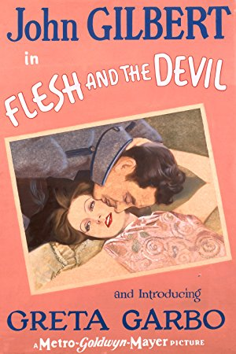
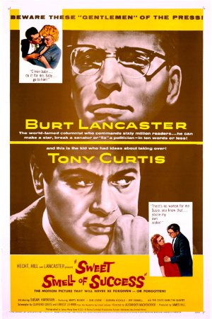

Season 51 (2016-2017)
-
 September 11, 2016Directed by Fred Zinnemann; Starring Gary Cooper, Thomas Mitchell, Lloyd Bridges, Katy Jurado
September 11, 2016Directed by Fred Zinnemann; Starring Gary Cooper, Thomas Mitchell, Lloyd Bridges, Katy Jurado
High Noon (Members' Choice!)
(Members' Choice!)
USA, 1952, 85 min, B&W, PG
This is the Citizen Kane of Western cinema. It is, simply put, a masterpiece. The acting, the music, the set, the dialogue, the camera work are all perfection. The film is a clear display of how the strong swallowed the weak in small, dirty, western towns where people would panic at the sight of armed bandits. This is the story of a man who would not run away - a man who left his beautiful bride alone - so he can confront four dangerous criminals who had a bone to pick with him. We follow Marshal Will Kane as he searches for men willing to help him fight for his life. It's all very unpredictable.
Film Notes (Karen Bender): Do not forsake me, oh my darlin'…
When you hear those words being sung by Tex Ritter, what images immediately come to mind? A steely man, alone, facing sure death at the hands of an outlaw mob as the townspeople he was sworn to protect desert him in his hour of need. The sun overhead casting no shadows. Stark images of an abandoned Western town. Dust blowing. Gary Cooper – alone on a Western street.
High Noon is an institution in our collective cinematic history. We've all seen it, maybe multiple times. But have you ever thought about what's behind this great film, and what it really says about our society?
High Noon was produced during the height of McCarthyism. Screenwriter Carl Foreman, who also wrote The Bridge on the River Kwai, had recently been blacklisted and retreated to London. It doesn't take a big stretch of the imagination to think that the paranoia in the film and the sting of the town's indifference to the travails of an individual may have sprung from Foreman's experiences with the House Un-American Activities Commission (HUAC).
After all, John Wayne lambasted High Noon as "un-American," which is pretty stiff criticism considering that High Noon stars his friend and colleague, Gary Cooper. Both Wayne and Cooper were conservative Republicans and founders of the Motion Picture Alliance for the Preservation of American Ideals, a group that cooperated with HUAC. Cooper himself testified in Congress at the HUAC hearings although he named no names. Perhaps Mr. Wayne's criticism was purely the result of Carl Forman's involvement in the picture, but perhaps the Duke also perceived that High Noon is in its own way a subversive film that projects an image of middle America that doesn't jibe with the jingoism that the films of Wayne embodied.
What is it about High Noon that could possibly be considered subversive? There's nothing subversive about the setting or the acting. What's subversive about a Western?
High Noon's subversive factor is that the common all-American folk of the mythical town represented here abandon their town to an approaching evil. They save their own skins at the expense of the one man who is brave enough to face the mob. They don't take up arms and join the fight as we are told the Minute Men did during the Revolution. They don't roll up their sleeves and join hands to defeat the bad guys. They don't have a gunfight in the OK Corral. They don't act like "real Americans". Instead, they pack their bags and get on the first train out of town.
Screenwriter Carl Foreman would have been familiar with this behavior because it had played out in recent world events. At the Nuremburg trials, it was apparent that everyday Germans were aware but didn't speak up at the atrocities visited upon their Jewish neighbors. Neville Chamberlain told the British people that there would be "peace in our time" in a desperate attempt to keep his country from confronting a global evil. Here at home, Forman's former friends and colleagues abandoned him and named him to the HUAC, causing him to have to flee his home in the US. Only a few years later, newspaper headlines would scream out a sensational story about a young woman being murdered in New York City while dozens of people cowered in their homes and did nothing.
High Noon is subversive because it shines a light on a reality that goes against an engrained school of thought that prospered in the propaganda films of the 1940s and in the Westerns of the 1950s. High Noon allows us to feel the fear and endless tension of the protagonist as he gets rejected, time and again, in his quest to build a posse to stand up to the bad guys.
So, while you watch this film and feel the tension building, note the constant reminder of the impending violence in the ticking of the clock. And ask yourself what's more shocking – the predictable murderous behavior of the bad guys or the shocking indifference of the good guys? -
 October 9, 2016Directed by George Sluizer; Starring Bernard-Pierre Donnadieu, Gene Bervoets, Johanna ter Steege, Gwen Eckhaus
October 9, 2016Directed by George Sluizer; Starring Bernard-Pierre Donnadieu, Gene Bervoets, Johanna ter Steege, Gwen Eckhaus
The Vanishing (Spoorlos)
Netherlands, 1988, 107 min, Color, Not Rated, French w/subtitles
When Saskia and Rex, a young Dutch couple, stop at a gas station in France, Saskia goes to the store to buy some drinks. She never returns; she seemingly just disappears. For three years, Rex pursues an extensive search for her. In an unusual deviation early in the film, the likely perpetrator is revealed and time is devoted to examining the stranger's eerily normal family life. At the conclusion of this extraordinary, gripping film, Rex will reach the bottom of the mystery. What he finds will stay with you for a long time.
Film Notes (Dick Wayne): It seems like such a common occurrence. You and your family are out on a long drive when you decide to stop for gas and a snack. Then you get back in the car and start to drive away when you suddenly realize that your teenager is not in the car. You find him at a magazine rack reading something that caught his eye. But what if after you searched the store you couldn't find him?
What if he seemed to have vanished?
That would be a rather frightening and perplexing dilemma. And that's how the film The Vanishing gets underway. The original title of this film is Spoorloos, a 1988 Dutch thriller that does several interesting things; among them is that the plot is disjointed, nonlinear, and more existential in nature.
Saskia and Rex touch and look at each other like lovers do. Saskia is the more energetic and impulsive of the two, while Rex is the calmer and more reserved one. At a gas station somewhere in the south of France, Saskia goes into the mart to buy drinks while Rex waits for her in the car. She fails to return and vanishes without a trace. Initially Rex gets angry, then he panics and finally becomes terrified when he realizes that something very bad might have happened to Saskia. Eventually he returns home without her.
The rest of the film focuses on two fascinating character transformations, Rex and Saskia's abductor Raymond. For both of these men, Saskia's vanishing becomes something of a litmus test. Past and present events frequently overlap but they are arranged in a way that makes the film easy to follow.
Rex vows to discover what has happened to Saskia. His determination gradually evolves into an unhealthy obsession that has a dramatic impact on the way he lives his life and communicates with people. Rex's search will take three years. He appears on TV, he blankets the country with posters. He follows leads and at the conclusion of the film he will get to the bottom of the mystery. What he finds will stay with you for a long time.
The second character is Saskia's kidnapper Raymond Lemorne, whose identity is revealed immediately after the vanishing. Thus, the whodunit element is eliminated in favor of something completely different. That something is a terrific character study of the breaking point – that very specific motivation/condition that forces a seemingly normal mind to switch into a different mode and completely change one's identity. Past and present events of the characters are shown which highlight their motivations and conditions influencing their changes.
For Rex and Raymond, the events are different but the manner in which their minds respond is very similar. These responses sum up the message of the film: the mind is a powerful switchboard which can be easily corrupted. And once corrupted, it becomes completely unpredictable. -
 November 13, 2016Directed by Bob Fosse; Starring Roy Scheider, Jessica Lange, Leland Palmer, Ann Reinking
November 13, 2016Directed by Bob Fosse; Starring Roy Scheider, Jessica Lange, Leland Palmer, Ann Reinking
All That Jazz
USA, 1979, 123 min, Color, R
His name is Joe Gideon and he is a movie director and Broadway choreographer. He is successful, wealthy, admired, and feared. He is also an unapologetic cheater who is addicted to amphetamines. He is struggling with a creative block, hates his own work and it's eating him alive. He finally creates a bold new concept for an upcoming show. Shortly after, he collapses and is told that he will die unless he changes his lifestyle. This is a brutally honest movie showing how spectacular and utterly ridiculous life on Broadway can be. Joe's story is essentially Bob Fosse's life story told via a series of magnificently choreographed pieces that rightfully place the movie among the greatest musicals ever filmed.
Film Notes (Gerry Folden): When a film opens Christmas week, it is clear that the studio and distributors are confident they have a winner very likely to be an Oscar contender. This movie did not disappoint. The night of the 1980 Academy Awards All That Jazz was up for Best Picture, Best Director, Best Actor, Best Screenplay, and five technical achievements. By evening's end All That Jazz won Best Art Direction, Best Costume Design, Best Editing and Best Song. It was otherwise a very good night for Kramer vs. Kramer. And then at the Cannes Film Festival All That Jazz won its highest award – the Palme d'Or for Bob Fosse. The faith placed in this film was richly rewarded, and you will be all the richer for the exciting, entertaining, enjoyment of this beautifully made film.
Stanley Kubrick, writer and director of 2001: A Space Odyssey (1968), Paths of Glory (1957) and many others, remarked this was "the best film I think I've ever seen".
It can be agreed that this film is autobiographical in that Roy Scheider's portrayal of choreographer/writer/director Joe Gideon is virtually congruent to the life of choreographer/writer/director Bob Fosse. This film was an attempt by Fosse to deal with his real-life heart attack in 1974 and within the film, through the character of Joe Gideon, evaluate the meaning of his life, his artistic labors, his many loves, and the relationships with his estranged wife and their daughter.
This film was prophetic in that Bob Fosse did indeed die of a heart attack in Washington, DC, in September 1987, at age 60. He was in a rush to go to the National Theatre for the final preparations of his stage musical Sweet Charity. He was cremated and his ashes scattered into the Atlantic off Quogue, Long Island, by his estranged wife Gwen Verdon and daughter as he had directed.
To fully appreciate the talent and drive of Bob Fosse, his unprecedented achievement in 1974 of the entertainment world's equivalent of horse racing's Triple Crown must be placed in evidence. He won an Oscar for directing Cabaret, a Tony for directing Broadway's Pippin, and an Emmy for directing television's Liza with a Z, all within the same awards season. Never before and not since has one individual achieved such a career hat-trick.
It is always interesting to speculate just how the final product might have differed had another individual been cast instead of the Oscar-nominated Roy Scheider. With the understanding that this would be a production of and by the genius Bob Fosse, casting and talent agents yielded such contenders as Robert Blake, Jack Nicholson, Elliot Gould, George Segal, Alan Bates, Jon Voight, Paul Newman, Alan Alda, Gene Hackman, and Jack Lemmon. The studio wanted Warren Beatty but Fosse did not. Richard Dreyfuss suffered through a few days of production and then quit. All along Fosse wanted Roy Scheider and finally got his way after the exhausted studio heads relented.
A viewer warning is warranted. One dance number in rehearsal contains brief female nudity above the waist. Also drug usage is integral to the lead character. Somewhat disturbing to a few may be the surgical scenes. But in today's climate of all things inappropriate, the amount of smoking alone just might get this wonderful film an X rating. -
 December 11, 2016Directed by Jules Dassin; Starring Jean Servais, Carl Möhner, Robert Manuel, Janine Darcey
December 11, 2016Directed by Jules Dassin; Starring Jean Servais, Carl Möhner, Robert Manuel, Janine Darcey
Rififi
France, 1955, 118 min, B&W, Not Rated, French w/subtitles
Most modern films see the execution of the heist itself as the climax. However, in this film the theft serves as a gateway into the study of both masculinity and the unwritten codes that bind men together. A team of four skilled thieves assemble to pull off a crime that is seemingly impossible and risk everything on a plan that requires utmost precision. The characters are always acutely aware of every detail of their surroundings. This methodical approach allows the tension to build until the actual heist which is presented without dialogue. While the men might be skilled thieves, the film suggests that they are ultimately boys playing a dangerous game that is above their heads.
Film Notes (Toni Meyer): Listed by Time magazine as one of the ten best heist films of all time, Rififi combines suspense, jealousy, and the macho posturing of a band of four jewel thieves. They carefully plan their midnight raid on a jewelry shop in the exclusive Rue de Rivoli of Paris. The execution of the crime is a riveting sequence filmed without music or dialogue but with knuckle-whitening tension. Their fictional robbery has come to be imitated by actual criminals around the world!
Director Dassin was blacklisted in the McCarthy era and took his talents to France to much acclaim. He was awarded as Best Director at the Cannes Film Festival in 1955. Later he continued to create suspense in the English language film Topkapi with yet another jewel robbery.Read Roger Ebert's review of Rififi at Great Movies. -
 January 15, 2017Directed by Peter Greenaway; Starring Richard Bohringer, Michael Gambon, Helen Mirren, Alan Howard
January 15, 2017Directed by Peter Greenaway; Starring Richard Bohringer, Michael Gambon, Helen Mirren, Alan Howard
The Cook, the Thief, His Wife & Her Lover
Netherlands/UK/France, 1989, 124 min, Color, NC-17
On one level you can describe this movie simply in terms of the characters and the lustful and unspeakable things they do to one another. On another level it is a wildly exuberant, bitingly satirical examination of excess, bad taste, and the most basic strengths and weaknesses of the human body. Dark humor and irony pepper nearly every scene. Most of the film takes place inside a fine French restaurant where the chef cares deeply for both the artistry and taste of the food. The restaurant's owner visits nightly to spout absurd discourses on every subject. The acting is superb in this gorgeous, visually rich film that tells the story of a fascinating hedonistic world.
Film Notes (Jackson Cooper): The milieu of the rich entices us moviegoers.
Think back to films like Gosford Park or The Leopard; when the high and mighty are framed in such lavish yet fragile ways, we catch on quickly that beneath the exterior beauty, something sinister bubbles beneath.
The Cook, The Thief, His Wife, and Her Lover is more interested in the opposite. Take for instance the opening long shots that track the restaurant owner (Michael Gambon) and his wife (Helen Mirren) through the dirty underbelly of the establishment, before travelling up into the opulent dining room.
The film follows the title characters as their lives mingle, interrupt, arouse, and anger one another, all set in an unrealistically gorgeous restaurant. To describe anything further would ruin the fun – and shocks – that come with the film. For a film that is all about appetites, it may spoil some viewers.
However, the film is not as shocking today as it must have been back when it was released. In fact, despite the frank depictions of sex, cannibalism, gluttony, and violence, audiences and critics forgave it due to the caliber of its four lead actors: Helen Mirren, Tim Roth, Michael Gambon, and Richard Bohringer.
So how did director Peter Greenaway get these Shakespearean actors to perform the surprisingly blunt actions they do in the film? Greenaway had a strong reputation within the film community for tasteful filmmaking – The Draughtman's Contract, Drowning by Numbers. So when he approached these actors with a strong script penned by him, they jumped to work with Greenaway.
A dominating factor of why this film is important (and controversial) is that it has been noted to be a satire on Margaret Thatcher's Britain. The excessive amounts of greed, food, and lust that consume (literally) everyone in the film is shockingly modern and perverse, especially given America's political climate today. The morality of all the characters is little to none, and none of them are particularly redeeming, which means evil deeds are heightened to more shocking circumstances. The ending of the film is perhaps the most direct in what the film is saying with its political undertones: a rebellion where the sinner is not consumed by his sins, but must consume them.
The film, though controversial, is praised by many of those who have seen it. I watched the film in an arthouse cinema in New York around two years ago. I was on a date and the person I went with loved Helen Mirren. Nearly twenty minutes in, I noticed my date shifting in their seat at the discomfort of the film. I was laughing at the screen.
As we left the theatre, walking five blocks to the subway, my date kept repeating, "Helen Mirren."
Helen Mirren.
Her performance in this film surpasses any performance of the 1980s (yes, that includes any by Meryl Streep). This is because Mirren owns her beauty, never flaunts it, never undermines it. But it never gets in the way of what she is thinking. Watch closely as she exchanges glances with a man across the room while her husband eats like an oaf. The desire in her look is breathtakingly sensual. And while no words are spoken between them, and their clothes stay on, we know they are making love.
It is a film that gets better with age and is a treat to experience on the big screen. Bon appetit. -
 February 12, 2017Directed by Howard Hawks; Starring Humphrey Bogart, Walter Brennan, Lauren Bacall, Dolores Moran
February 12, 2017Directed by Howard Hawks; Starring Humphrey Bogart, Walter Brennan, Lauren Bacall, Dolores Moran
To Have and Have Not
USA, 1944, 100 min, B&W, Not Rated
An American running a fishing charter in the Caribbean romances a young lounge singer and reluctantly becomes involved with the French Resistance by agreeing to secretly transport a de Gaulle lieutenant. Based on Hemingway's novel, the story is sleepy and resembles Casablanca. However, the film is largely of note due to the debut of Lauren Bacall and the beginning of her relationship with Bogart. The two sizzle on the screen. Even though we're trained to look at the romance as the central relationship in a movie, it's Harry's (Bogart) caretaking of his first mate Eddie (Brennan) that serves as the film's real message. It's the sticking by the Eddies of the world, even though they cause nothing but trouble, that define a man's character and suggest he does the right thing.
Film Notes (Britt Crews): "Polish up the picks, shovels, and pans for the gold mine on the way in Howard Hawks' production of Ernest Hemingway's To Have and Have Not, which we sneaked last night and which is not only a second Casablanca but two and a half times what Casablanca was. Here is a story of adventure and basic sex appeal the likes of which we have not seen since Morocco and Algiers. Bogart terrific, never was seen like this before. Lauren Bacall, new find of ours playing opposite Bogart, distinct personality who positively will be a star overnight. Nothing like Bacall has been seen on the screen since Garbo and Dietrich. This is one of the biggest and hottest attractions we have ever had. If this sounds like I'm overboard, well I am."
-Interoffice memo, Warners Head of Publicity, Charlie Einfeld
What makes a movie star? Each year countless talented actors make their pilgrimage to mythic Hollywood hoping to find their place in the firmament knowing full well that few find anything but disappointment. Stardust has always been in short supply.
Perhaps that is part of our fascination with stars. We adore and sometimes idolize those rare individuals who beat the odds to soar into the heavens and beam down on us as we sit collectively – or independently these days – in the dark. Movies and television shows are created about the birth, life, decline, death of stars. Magazines launched. Book deals made.
Here is yet another legend of the birth of a star: a woman named "Slim" Hawks picked up the March 1943 Harper's Bazaar and stopped, intrigued at the cover picture of a girl standing outside of a blood bank. Something about the girl grabbed the eye and held it, then held it some more. Slim tossed the magazine to her husband, director-producer Howard Hawks, and soon after the girl was on a train to Hollywood under a seven-year personal contract to him. Born Betty Joan Perske, the girl had already adopted her maternal grandmother's last name, Bacall, adding the second "L" to make pronunciation easier. Hawks rechristened her Lauren. Lauren Bacall.
While well-satisfied with the girl's looks, Hawks changed more than her first name. Preferring low-register female voices, he encouraged her to train hers so that no matter how emotional or excited she became onscreen, her voice would never screech, never grate. Bacall achieved this goal by finding a spot on Mulholland Drive and reading aloud, perhaps all 556 pages of The Robe, lower and louder than normal. This repeated exercise along with the contents of a small mountain of cigarette cartons achieved the desired seductive gravelly result.
Singing lessons began. Perhaps most significantly, Hawks took a shy nice Jewish girl and transformed her into the tough sexy equal – some argue superior – of any man. Hawks asked screenwriter Jules Furthman as he began work on To Have and Have Not: "Do you suppose we could make a girl who is insolent? As insolent as Bogart, who insults people, who grins when she does it, and people like it?" They did. She was. We do.
To Have and Have Not allows us to witness not only the birth of a star and the easy charisma of one of the silver screen's superstars, but the unexpected intervention by Cupid. Soon after shooting began on the film, the 44-year-old Humphrey Bogart and the 19-year-old Lauren Bacall began falling in love in real as well as reel life. Their chemistry is palpable. Leonard Maltin wrote, "It's one of these instances where it's quite possible we are eyewitnesses to an actor or actress failing in love, and while good actors make us believe that all the time, there has to be some extra kick when it's real." Reality and illusion merged seamlessly. Off camera, Bacall and Bogart called each other by their character's names, Slim and Steve. Later, when they married and had their first child, they named him Steve. Two stars united: A Hollywood happy ending indeed.
"You know you don't have to act with me, Steve. You don't have to say anything and you don't have to do anything. Not a thing. Oh, maybe just whistle. You know how to whistle, don't you, Steve? You just put your lips together and blow." -

March 12, 2017Directed by Clarence Brown; Starring John Gilbert, Greta Garbo, Lars Hanson, Barbara Kent
Flesh and the Devil
USA, 1926, 112 min, B&W, Not Rated, Silent w/intertitles
This is the movie that made Greta Garbo a legend. She glows on the screen and never looked more beautiful. The story is a love triangle between two best friends and a wanton woman. Set in Austria before the first World War, Leo and Ulrich are soldiers and best friends from childhood. Ulrich's sister, Hertha, is in love with Leo. Felicitas (Garbo) plays a completely wicked woman. She seduces Leo but neglects to tell him she's married. Her husband catches them and demands satisfaction in a duel. Leo kills him and is advised to leave the country. When Leo returns years later, he learns that his best friend has married Felicitas. This woman has no shame. You can probably guess where the story goes from here so no more will be said.
Film Notes (Jackson Cooper): When Garbo spoke, the world reacted with "Oh, finally, but why?"
The power of Garbo finally speaking in a feature-length film was a surprising one – met with a variety of reactions ranging from appalled to even more enamored.
The high hopes that audiences had of Garbo having a voice that fit both their expectations of the femme fatales she portrayed before and what they fantasized in Garbo as the perfect woman were the products of Garbo's performances in silent pictures, most notably Flesh and the Devil.
The film co-stars John Gilbert, Garbo's real-life lover at the time and an actor that equalled Garbo in charisma and power of expression in the silent era. Director Clarence Brown had no need to come between the two actors – their romance was real and it shows onscreen.
To summarize a film like Flesh and the Devil may diminish the film's power to grab its audience even when the plot is very straightforward. Less is more, after all, in these silent films (Here's looking at you, Sunrise).
Garbo plays the married femme fatale, aptly named Felicitas, who seduces Leo (Gilbert) and, much to the dismay of her husband, causes the husband's death through a duel between the two men. Leo is banished to foreign service for three years and upon returning home, he finds Felicitas has married Leo's childhood friend Ulrich.
While the picture is silent, and Garbo never does (or can) utter a word, the expressions on her and the actors' faces speak volumes. It is difficult to put into words the universality the film brings to mind, yet the simplicity in the expressions to display deep emotions evokes films such as L'Atalante.
And the sex.
Well, okay, the 1920s sex. Google "Flesh and the Devil" and you will find four YouTube Videos about Garbo and Gilbert's kiss. That is a mere morsel of the sexual flavor the film portrays. Flesh and the Devil keeps its heat classy, though the communion scene still manages to make viewers blush.
The model of the real-life onscreen romance of Flesh precedes the blockbuster appeal of casting real couples in romantic movies, recently seen in the Brad Pitt and Marion Cotillard vehicle Allied. Whether these movies help or harm the relationships, we can only fantasize. But that's what the movies were meant for, after all. -
 April 9, 2017Directed by Marc Rothemund; Starring Julia Jentsch, Alexander Held, Fabian Hinrichs, Johanna Gastdorf
April 9, 2017Directed by Marc Rothemund; Starring Julia Jentsch, Alexander Held, Fabian Hinrichs, Johanna Gastdorf
Sophie Scholl: The Final Days (Sophie Scholl: Die letzten Tage)
Germany, 2005, 120 min, Color, Not Rated, German w/subtitles
On February 10, 1943, Sophia Scholl and her brother Hans, students at Munich University and part of an underground resistance movement, were arrested for distributing anti-Nazi propaganda on campus. This film uses transcripts and testimonials to recreate those events centered on Sophie's interrogation. A large chunk of the film is devoted to Sophie's questioning by an austere Nazi official over several hours. Filmed like a tennis match it rhythmically builds to crescendos and then calms down creating suspense and intrigue. This movie puts human faces on the casualties of war and reminds us of mistakes we must never make again.
Film Notes (Jackson Cooper): How fitting to watch a film about the appeals system at a time when we are saying, "And where in the heck is it?"
Whichever current political, athletic, or social figure you feel deserves to stand in front of a blind jury to get what they deserve, our heroine Sophie Scholl had it coming too. From the title alone, we know that the end is near for her. Heck, even from the onset of the film, all of the information is given to us, even the verdict.
Sophie Scholl's claim to fame was her and her brother Hans' resistance of the War through the White Rose, an organization which used pamphlets to protest the War and criticize the German regime. The pamphlets that were made need to be mailed but are instead distributed by the brother-and-sister team on their college campus. Therefore, it comes as no surprise that Sophie gets turned in by someone who does not agree with the criticisms, and later becomes a Nazi himself.
What follows in the film is an elongated interrogation of Sophie before those who criticize her. And whether we believe she had it coming or not, we cannot help but be completely enthralled by the poise and intelligence she posesses.
The script of Sophie Scholl was comprised of factual evidence from the trial, taken verbatim from transcripts kept by the Gestapo. This separates Sophie Scholl from other courtroom films. There is no sense of artifice or glamorizing the courtroom in this film – in fact, many of the colors and shades are dark and gray, uninteresting, bland even.
The film however veers away from conventional courtroom film tropes to reveal a factual intriguing portrayal of law under evil. Even when a dictator who feels he is above the law is in power, the law of the land stays true. Scenes in Sophie Scholl may make audience members frustrated or question the law, but in the end, law wins out. Idealism and the attack of idealism is one thing; doing what is right is another.
Sophie Scholl: The Final Days received an Oscar nomination as well as 22 wins internationally. -
 May 14, 2017Directed by Pedro Almodóvar; Starring Penélope Cruz, Carmen Maura, Lola Dueñas, Blanca Portillo
May 14, 2017Directed by Pedro Almodóvar; Starring Penélope Cruz, Carmen Maura, Lola Dueñas, Blanca Portillo
Volver
Spain, 2006, 121 min, Color, R, Spanish w/subtitles
This is a ghost story that includes lust, incest, rape, and murder. The opening scene is set at a cemetery where Raimunda (Cruz) and her sister Sola (Dueñas) are cleaning the gravestone of their parents who died in a fire. Or did they? For starters, the sisters have an aunt who claims their mom, Irene, has returned from the dead to take care of her. Sola passes off Irene as a Russian and puts her to work in an illegal beauty salon. When Raimunda's teen daughter Paula claims to have stabbed Raimunda's husband when he tried to rape her, Raimunda hides the body in a freezer. Now add a new twist: a neighbor who's dying of cancer. Got that? No matter. Plot is merely Almodovar's way into the souls of his women.
Film Notes (Pete Corson): "Volver" is a Spanish word meaning "to return". The movie centers around two sisters, Raimunda (Penelope Cruz) and Sole (Lola Duenas); Raimunda's daughter Tia Paula; and the reappearing ghost of Irene (Carmen Maura), the mother of Raimunda and Sole, who died in a fire several years before.
The women travel from Madrid to a small village to attend the funeral of Aunt Paula (Chus Lampreave). While there, Aunt Paula's neighbor Augustina (Blanca Portillo) tells them that Aunt Paula used to talk to the ghost of Irene. This sets in motion the story we see. When returning to Madrid, Sole discovers that the ghost has stowed away in her car trunk and is intending to stay with her.
This is where the story develops the twists and zaniness that we have come to expect from Almodóvar. If you saw his film Women on the Verge of a Nervous Breakdown, which we screened in Season 50 (2015-16), you will understand his delightful sense of humor. This will actually be the fifth of his films we have shown, because he is the foremost Spanish film director to come along since Luis Buñuel.
A Mother's Day film? It has some violence but not of a gratuitous character; the story line keeps including deaths and references to death; and of course the mother Irene is a ghost. However, when we reach the end of Almodóvar's tale, we find it is not at all about the dead, but about our sense of loss when we lose a parent. It is a beautiful film, and Irene is the beautifully soft mother who looks over her girls until she is satisfied they are ok. -
 June 11, 2017Directed by Tom McCarthy; Starring Peter Dinklage, Patricia Clarkson, Bobby Cannavale
June 11, 2017Directed by Tom McCarthy; Starring Peter Dinklage, Patricia Clarkson, Bobby Cannavale
The Station Agent
USA, 2003, 89 min, Color, R
When Finn (Peter Dinklage) inherits an old abandoned train station from the man who was his only friend, he moves there to live a life of solitude, inasmuch as his whole life he's had to deal with dwarfism and being treated as an outcast. Only he doesn't find solitude there, instead he meets a chatty hotdog vendor and a troubled woman. An unlikely friendship develops as the three simply deal with life and the complications life brings. What makes this movie genius is that it's so natural and realistic. Peter Dinklage is the glue that holds the pieces of the story together. His subtle expressions set the tone of the movie, moving us to laugh or feel sad.
Film Notes (Katherine Reynolds): "It's really funny how people see me and treat me, since I'm really just a simple, boring person," says Peter Dinklage's Finbar McBride – loner, obsessive railroad enthusiast, and dwarf. Many people find the third descriptor the most interesting, and Fin is so over that response. He inherits a rural New Jersey train depot and sets out for a life of solitude. He doesn't take into account Joe (Bobby Canavale), the nearby hot dog vendor who is as irrepressibly upbeat and chatty as Fin is not.
Completing the trio is Patricia Clarkson's Olivia, a local artist estranged from her husband following the sudden death of their young son two years past. Despite their best efforts to resist Joe, Fin and Olivia slowly and uneasily find themselves connecting with him and each other to form a tribe of lonely souls.
This must have been a dream cast for first-time director Tom McCarthy, himself also an actor who had obviously been paying attention to what goes on behind the cameras. The Station Agent is a small film about what appear to be small lives if you don't look too closely. Not much happens until it does. When it's over, you want to still be hanging out with Fin, Joe, and Olivia as they quietly talk about their daily lives.
Elvis Mitchell says "The movie's writer and director, Tom McCarthy, has such an appreciation for quiet that it occupies the same space as a character in this film, a delicate, thoughtful and often hilarious take on loneliness."
The Station Agent rated 95% on Rotten Tomatoes. McCarthy won the BAFTA Award for Best Original Screenplay and the Independent Spirit Award for Best First Screenplay. -
 July 9, 2017Directed by Andrei Tarkovsky; Starring Margarita Terekhova, Oleg Yankovskiy, Filipp Yankovskiy, Ignat Daniltsev
July 9, 2017Directed by Andrei Tarkovsky; Starring Margarita Terekhova, Oleg Yankovskiy, Filipp Yankovskiy, Ignat Daniltsev
The Mirror (Zerkalo)
Soviet Union, 1975, 107 min, B&W, G, Russian w/subtitles
Mirror is indeed a film that can provide immense satisfaction to a patient, intelligent viewer interested in good cinema, art, classical Western music and Russian literature. This film is a very complex autobiographical film of Tarkovsky (director) reflecting on his memories, good and bad, from childhood to adult life. Mirror does not have a plot, it does not contain any violence or sex, and it does not follow chronologically. Tarkovsy elevated the film to a sublime state of reflection (hence the title) on the importance of family and spiritual life, encouraging the viewer to notice similar visual and aural elements that one might have experienced in one's own life.
Film Notes (Dick Wayne): Ingmar Bergman called Andrei Tarkovsky the greatest director. He died in 1986 at only 54 and is considered one of the most influential in the history of the medium. His work often encompassed a particular Russian-flavored tumultuousness on the small scale of a human life reflected against human history, full of tragedy, trauma, and torment. So his films offer plenty of psychological and emotional room to resonate with us today.
Mirror is Tarkovsky's autobiographical – and sometimes abstrusely impressionistic – journey through one man's life, from his carefree childhood "before the war" in an idyllic countryside through the upheaval of the war itself and into the present day, which is fraught with interpersonal conflict. The man is only glimpsed a few times but we are meant to understand that as he lies dying from an unnamed illness, he is remembering his life.
The most obvious and perhaps the most intriguing idea in the film is in the title. Throughout the film, we are treated to shots of mirrors, always with people clearly in the mirror. The mirror suggests a number of ideas. The most literal idea, also to be taken figuratively, is the idea of self-reflection, that the mirror exists as a lens in which to examine oneself.
The mirror also offers a secondary idea of a mirror existence; that the mirror serves as a bridge between two planes of existence and that only through reflection can one begin to notice that existence. Early on, one of the characters comments that people are in such a hurry that they miss out on what truly matters. Therefore, the lingering camera is Tarkofsky's attempt to take that time to stop and reflect; to take in things around it and hope to find the deeper meaning to pierce beyond the physical shroud. -

August 13, 2017Directed by Alexander Mackendrick; Starring Burt Lancaster, Tony Curtis, Susan Harrison, Martin Milner
Sweet Smell of Success
USA, 1957, 96 min, B&W, Not Rated
This film is about scratching (the "you scratch my back and I'll scratch yours" type), and two men without morals. One is a powerful newspaper columnist, who could create stars in minutes, and destroy them just as fast. The other man is a ambitious and manipulative press agent who both admires and fears the columnist. The plot is practically irrelevant. It is the unique dialogue, the one-liners and colorful expressions that fascinate, as well as the atmosphere of chic clubs, bars and influence of powerful politicians, corrupt cops and beautiful women. The movie is a master class in demagoguery and machinations.
Film Notes (Karen Bender): The Sweet Smell of Success is a 1957 film noir about a powerful columnist, J. J. Hunsecker (Burt Lancaster), based on real-life and contemporary gossip columnist Walter Winchell. Hunsecker wields his power without pity and prevails upon slick, unethical press agent Sidney Falco (Tony Curtis) – a man who will stoop to any depth to get publicity for his clients – to ruin a romance between Hunsecker's sister Susan (Susan Harrison) and up-and-coming jazz musician Steve Dallas (Martin Milner), a man that Hunsecker feels is an inappropriate match for his sister. Falco takes the bait and puts a false rumor in a rival column, asserting that Steve is a dope addict and a Communist. The plan is for Hunsecker to step in to rescue Steve's reputation, with the idea that the proud and independent Steve will reject the favor and in turn look bad to Susan.
That's the plan and it works – at first. But things quickly become more complicated to the point that even sleazy Sidney wants no part of it. Pretty soon, everything goes awry, and in a big way.
The screenplay was adapted from a novelette by Ernst Lehman. Lehman was initially booked to write the screenplay but due to illness, was replaced at the last minute by Clifford Odets, a Hollywood writer whose reputation was impugned during the McCarthy era. Rather than applying a little polish, Odets started from scratch and rewrote the entire screenplay, sometimes writing dialogue the same day it was filmed. Despite that, he created an acidic and brilliantly crafted script that turned the talky novelette into a fine work of cinema. Lehman went on to establish himself as a Hollywood writer of some distinction, penning scripts for diverse films such as North by Northwest and The Sound of Music.
With sterling performances by Burt Lancaster and Tony Curtis, a popular comedic actor who was cast against type, British director Alexander MacKendrick captures the time and place of New York in the 1950s. The film was initially panned by the critics but over the years has gained recognition and is now highly acclaimed by film critics, particularly for its screenplay and cinematography by James Wong Howe. In 1993, the film was selected for preservation by the Library of Congress. Add to that a film score by Elmer Bernstein that combines classically-based orchestral music with modern jazz by the Chico Hamilton Quintet and you have a powerful film that you will not soon forget.Read Roger Ebert's review of Sweet Smell of Success at Great Movies.